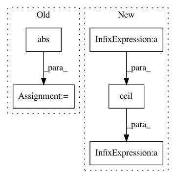

7ad4996b6106e601ed7136c11e17abbb149ef889,examples/lines_bars_and_markers/scatter_hist.py,,,#,15
Before Change
// now determine nice limits by hand:
binwidth = 0.25
xymax = max(np.max(np.abs(x)), np.max(np.abs(y)))
lim = (int(xymax/binwidth) + 1) * binwidth
axScatter.set_xlim((-lim, lim))
axScatter.set_ylim((-lim, lim))
After Change
// now determine nice limits by hand:
binwidth = 0.25
lim = np.ceil(np.abs([x, y]).max() / binwidth) * binwidth
ax_scatter.set_xlim((-lim, lim))
ax_scatter.set_ylim((-lim, lim))
bins = np.arange(-lim, lim + binwidth, binwidth)
In pattern: SUPERPATTERN
Frequency: 3
Non-data size: 5
Instances
Project Name: matplotlib/matplotlib
Commit Name: 7ad4996b6106e601ed7136c11e17abbb149ef889
Time: 2019-04-27
Author: nelle.varoquaux@gmail.com
File Name: examples/lines_bars_and_markers/scatter_hist.py
Class Name:
Method Name:
Project Name: matplotlib/matplotlib
Commit Name: eaa7025a37930ddfac810721c14452548db87ebc
Time: 2019-04-26
Author: 2836374+timhoffm@users.noreply.github.com
File Name: examples/lines_bars_and_markers/scatter_hist.py
Class Name:
Method Name:
Project Name: galeone/dynamic-training-bench
Commit Name: 27ce20d7f11bcc4ea7d3b04a67db3d0dc5e40e19
Time: 2016-10-26
Author: nessuno@nerdz.eu
File Name: train_decaying_keep_prob.py
Class Name:
Method Name: keep_prob_decay